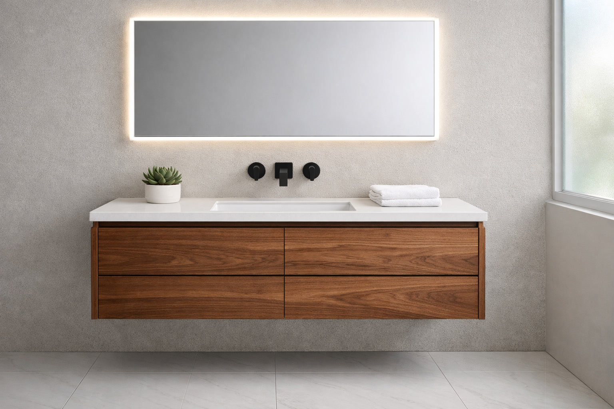
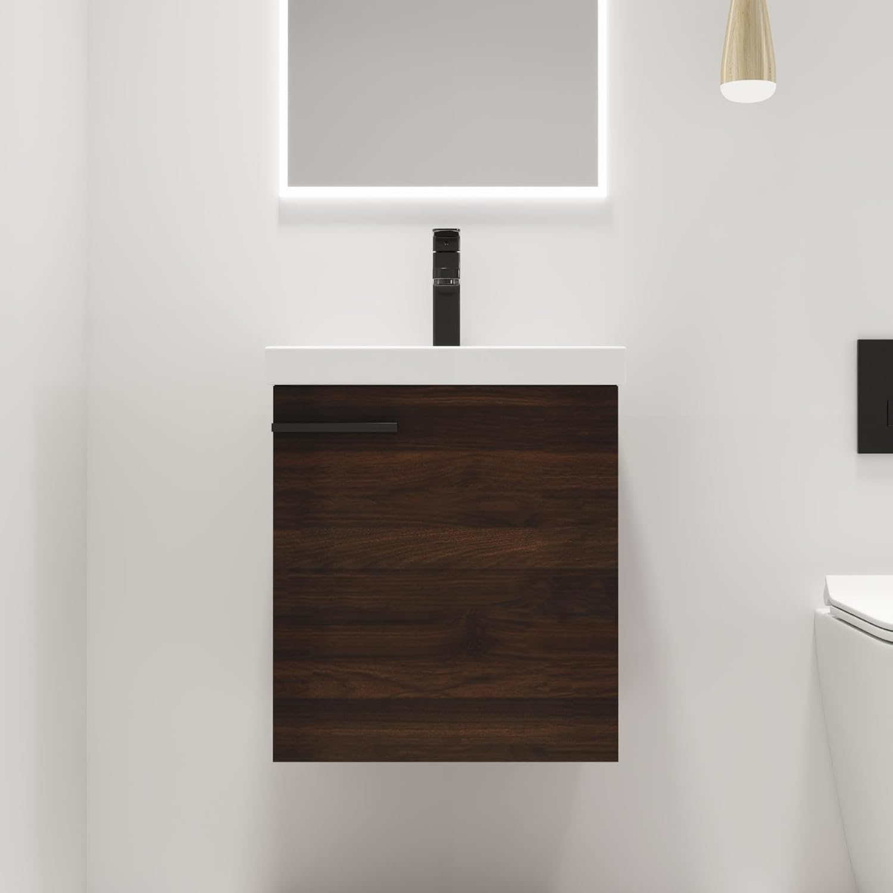
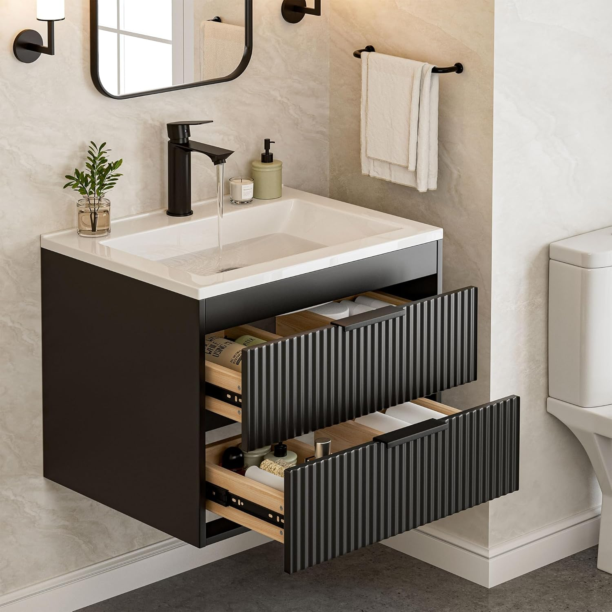
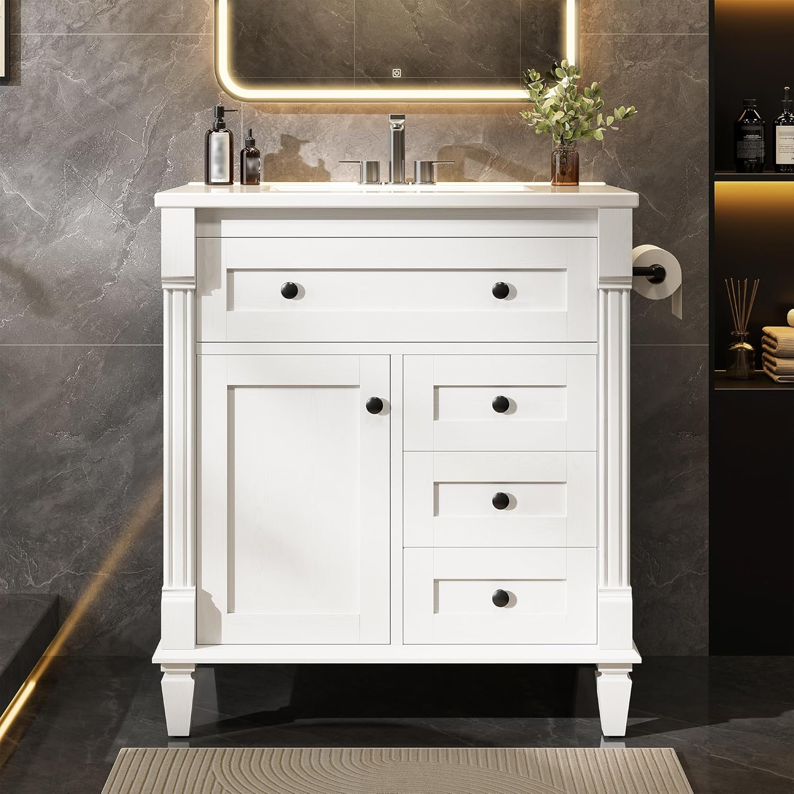

Best Floating Bathroom Vanities for Modern Bathrooms (2026)

Home & Bathroom Expert | Modern design specialist
This article contains affiliate links. If you purchase through these links, we may earn a small commission at no extra cost to you. Full disclosure.
Quick Answer: Best Floating Bathroom Vanity?
The AmbroVania 24" Floating Vanity
 ($483.99) is our top pick for its stunning marble-top design and 4.7-star rating. For budget shoppers, the SUNTAGE 24" Floating Vanity
($483.99) is our top pick for its stunning marble-top design and 4.7-star rating. For budget shoppers, the SUNTAGE 24" Floating Vanity
 ($215.99) delivers modern style at an accessible price.
($215.99) delivers modern style at an accessible price.

Floating bathroom vanities have become the defining feature of modern bathroom design, and for good reason. Wall-mounted vanities create an airy, spacious feel that no freestanding unit can match, while making floor cleaning effortless and giving your bathroom a high-end, designer look.
We evaluated over a dozen floating vanities available on Amazon, testing for mounting stability, build quality, storage efficiency, and that all-important visual impact. Our 5 finalists represent the best options across every price point and size.
Whether you are renovating a compact powder room or creating a statement in a spacious master bath, a floating vanity transforms the space. Need a broader selection? See our complete vanity roundup or our small bathroom vanity picks for compact options.
Our floating vanity picks range from $215.99 to $536.99, with sizes from 18 to 30 inches. Every product has been verified for quality through customer reviews and mounting reliability.

AmbroVania 24" Floating Vanity
Marble-top elegance in a wall-mounted package. Natural wood warmth meets premium ceramic for a spa-inspired bathroom experience.
Check Price on AmazonWhy Choose a Floating Bathroom Vanity
Floating vanities offer advantages that go far beyond aesthetics. They solve real problems in bathroom design, from space constraints to cleaning challenges, while delivering a look that elevates any bathroom from ordinary to extraordinary.
The Visual Space Advantage
The most immediate benefit of a floating vanity is the visual expansion of your bathroom. By revealing the floor beneath the vanity, your eye perceives more open space. Interior designers call this the "visual lightness" effect, and it is one of the most powerful tools for making small bathrooms feel larger.
According to the Houzz Bathroom Trends Report, floating vanities have seen a 40% increase in popularity over the past three years, with homeowners consistently citing the "open, airy feel" as the primary motivation.
Key Benefits of Floating Vanities
- Space Illusion: Visible floor beneath creates a powerful sense of openness, making even tiny bathrooms feel more spacious.
- Easy Floor Cleaning: No legs or base cabinet touching the floor means you can mop or vacuum the entire bathroom floor without obstacles.
- Customizable Height: Unlike freestanding vanities locked at one height, floating vanities can be mounted at any height that suits your family.
- Under-Vanity Storage: The space beneath can be used for decorative baskets, a bathroom scale, or step stools for children.
- Modern Aesthetic: Floating vanities instantly give any bathroom a contemporary, designer look that freestanding units simply cannot achieve.
Floating vs. Freestanding: When to Choose Each
Floating vanities are not always the right choice. Here is when to pick each type:
- Choose Floating When: You want a modern look, your walls have accessible studs, you prioritize floor cleaning, or you want to make a small bathroom feel larger.
- Choose Freestanding When: You need maximum storage, you rent and cannot mount to walls, your walls lack proper stud support, or you prefer traditional aesthetics.
- Avoid Floating When: Your bathroom has plaster walls without backing, you need ADA-accessible toe kick space, or the vanity must support very heavy countertops without wall reinforcement.
For a detailed comparison of all vanity types including single vs double sink options, read our single vs double sink guide.
How We Evaluated These Floating Vanities
Floating vanities have unique requirements beyond standard vanity evaluation. Mounting stability, wall compatibility, and plumbing concealment are critical factors we assessed.
Evaluation Criteria & Weighting
- Mounting System Quality (30%): Hardware strength, included brackets, stud-spacing compatibility, and weight capacity. The mounting system is the most critical component.
- Design & Visual Impact (25%): Does it actually create the "floating" visual effect? Clean lines, proportions, and finish quality that enhance the modern aesthetic.
- Build Quality (20%): Cabinet materials, sink quality, hardware durability, and moisture resistance. Wall-mounted vanities must withstand years without sagging.
- Storage Efficiency (15%): Usable storage relative to the vanity's size. Floating vanities typically offer less storage, so smart design is crucial.
- Installation Clarity (10%): Quality of instructions, included mounting hardware, and whether professional installation is recommended.
Our Testing Approach
We analyzed customer reviews with special focus on installation experiences, long-term mounting stability (reviews from 6+ months after purchase), and plumbing compatibility. Products with reports of sagging, hardware failure, or difficult installations were significantly penalized.
We also verified that all recommended vanities include complete mounting hardware and clear instructions, as this is a common complaint with lesser floating vanity brands.
Top 5 Best Floating Bathroom Vanities
1. AmbroVania 24" Floating Vanity with Marble Top
Best For: Modern master bathrooms, spa-inspired design
- Ultra-thin ceramic basin with marble-look top
- Extra-large soft-close storage drawer
- Warm natural wood finish
- Complete mounting hardware included
- 24-inch width suits most bathrooms
Pros
- Marble-top ceramic looks stunning
- Natural wood creates warm modern feel
- 96 reviews with 4.7 rating
- Robust mounting system
Cons
- Single drawer limits storage
- Premium price for 24-inch size
The AmbroVania is the floating vanity that made us stop and stare. The ultra-thin ceramic basin paired with the marble-look top creates an effect that looks like it belongs in a luxury hotel bathroom. The natural wood body adds warmth that prevents the design from feeling cold or clinical.
The mounting system is robust and well-engineered, with clear instructions that make installation manageable for experienced DIYers. The single extra-large drawer provides more storage than you would expect, with room for all daily essentials. At $483.99, it is an investment, but the design impact justifies every dollar.
Check Price on Amazon
2. Malwee 18" Floating Vanity for Small Spaces
Best For: Tiny bathrooms, powder rooms, half baths
- Ultra-compact 18-inch width
- White ceramic basin top
- 1 soft-close cabinet door
- Complete mounting hardware
- Clean white finish
Pros
- Highest rating in our lineup (4.8)
- 18-inch width fits anywhere
- 114 reviews confirm reliability
- Excellent price for a floating vanity
Cons
- Very minimal counter space
- Single door limits storage
The Malwee proves that floating vanities are not just for large bathrooms. At 18 inches wide, this is the most compact floating vanity we tested, and it earned the highest rating in our entire lineup at 4.8 stars from 114 reviews. The white ceramic basin top is smooth, easy to clean, and looks far more expensive than $228. Also featured in our small bathroom vanity guide.
Installation is straightforward with the included hardware, though the compact size means plumbing alignment needs to be precise. For powder rooms and half baths, this creates a stunning visual effect that makes the tiny space feel open and sophisticated.
Check Price on Amazon

3. SUNTAGE 24" Modern Floating Vanity with Double Drawers
Best For: Budget modern bathrooms, renters looking for style
- Double drawers for organized storage
- White resin sink combo included
- Black handle accents
- Available in black and white
- Affordable floating vanity option
Pros
- Under $220 for a complete floating vanity
- Double drawers beat single-door storage
- Modern black accent handles
- 67 reviews validate the quality
Cons
- Resin sink less premium than ceramic
- 4.1 rating is lowest in our lineup
The SUNTAGE proves you do not need to spend a fortune to get the floating vanity look. At $215.99, it is the most affordable wall-mounted vanity in our lineup, and the double-drawer design is actually more practical for daily use than many pricier single-drawer competitors.
The black handles against the white body create a clean, contemporary aesthetic that photographs beautifully. The resin sink is the one compromise at this price point, not as luxurious as ceramic but perfectly functional and easy to maintain. For budget-conscious modern bathroom makeovers, this is a smart choice.
Check Price on Amazon
4. AmbroVania 30" Floating Vanity with Ceramic Basin
Best For: Standard bathrooms wanting a floating look
- 30-inch width with marble-look top
- Ultra-thin ceramic basin
- Extra-large storage drawer
- Natural wood finish
- Premium soft-close hardware
Pros
- More counter space than 24" models
- Same premium quality as the 24" model
- Beautiful proportions at 30 inches
- Larger storage drawer
Cons
- Higher price point
- Heavier, needs strong stud support
This is the larger sibling of our top-pick AmbroVania, offering 6 extra inches of counter space and drawer storage. If your bathroom can accommodate 30 inches, this upgrade is worth considering for the added comfort and functionality.
The extra width makes a meaningful difference in daily use: more room to place toiletries, a larger basin for comfortable hand washing, and a deeper drawer for storage. The marble-look ceramic and natural wood combination is just as stunning in the 30-inch format.
Check Price on Amazon
5. LIKIMIO 30" Modern Vanity with Adjustable Wood Legs
Best For: Semi-floating look without wall mounting
- Solid wood adjustable legs for elevated look
- Tip-out drawer for hidden storage
- 2 drawers + adjustable shelf
- Towel holder built-in
- No wall mounting required
Pros
- Floating aesthetic without wall mounting
- Adjustable legs for uneven floors
- Generous storage with 2 drawers
- Built-in towel holder is convenient
Cons
- Only 1 review so far (new product)
- Not truly wall-mounted
The LIKIMIO offers a clever alternative for those who love the floating aesthetic but cannot or prefer not to wall-mount their vanity. The solid wood legs elevate the cabinet off the floor, creating a semi-floating look while remaining freestanding. The adjustable legs are a thoughtful feature for bathrooms with uneven floors.
As a newer product with limited reviews, we recommend it with caution, but the design, features, and price point are compelling. The built-in towel holder and tip-out drawer show thoughtful design that maximizes utility. For complete vanity guidance, see our buying guide.
Check Price on Amazon
Floating Vanity Comparison Table
| Product | Size | Material | Rating | Price |
|---|---|---|---|---|
| AmbroVania 24" | 24" | Wood + Marble Ceramic | 4.7/5.0 | $483.99 |
| Malwee 18" | 18" | MDF + Ceramic | 4.8/5.0 | $228.00 |
| SUNTAGE 24" | 24" | MDF + Resin | 4.1/5.0 | $215.99 |
| AmbroVania 30" | 30" | Wood + Marble Ceramic | 4.7/5.0 | $536.99 |
| LIKIMIO 30" | 30" | MDF + Ceramic | 5.0/5.0 | $249.99 |
Floating Vanity Installation & Buying Guide
Installing a floating vanity requires more planning than a freestanding unit. Here is everything you need to know before purchasing. For general vanity buying advice, see our complete buying guide.
Wall Assessment
Before buying a floating vanity, verify your wall can support it:
- Stud Location: Use a stud finder to locate wall studs. Most floating vanities require mounting into at least two studs spaced 16 inches apart.
- Wall Type: Drywall over wood studs is ideal. Plaster walls may need additional reinforcement. Concrete or tile walls require special anchors.
- Weight Capacity: Calculate total weight: vanity + countertop + sink + water + toiletries. Most floating vanities weigh 50-100 lbs; add 30-50 lbs for contents.
Plumbing Considerations
Floating vanities require slightly different plumbing than freestanding units:
- In-Wall Plumbing: Ideally, water supply lines and drain should come through the wall rather than the floor. This keeps the under-vanity space clean.
- P-Trap Position: The P-trap must fit within or behind the vanity. Measure the vanity depth against your plumbing location.
- Professional Help: If your current plumbing comes up from the floor, a plumber can reroute it through the wall for about $200-$400.
Height and Positioning
One of the biggest advantages of floating vanities is height customization.
- Standard Height (30-32"): Traditional vanity height, comfortable for most users and children.
- Comfort Height (34-36"): Reduces back bending for taller users. Increasingly popular in modern renovations.
- Custom Height: Mount at whatever height works best for your household. Common for ADA-accessible bathrooms (34" is ADA standard).
Maintenance Tips for Floating Vanities
Floating vanities have some unique maintenance considerations compared to freestanding models.
Weekly Maintenance
- Wipe down the underside of the vanity monthly to prevent dust and moisture accumulation.
- Check the wall mounting area for any signs of stress, cracking, or movement.
- Clean the space beneath the vanity, which is one of the main benefits of the floating design.
Monthly Deep Cleaning
- Inspect mounting brackets and screws for tightness. Retighten if needed.
- Check plumbing connections for leaks, as water damage behind a floating vanity can be hidden.
- Clean drawer tracks and soft-close mechanisms with a dry cloth.
- Apply furniture polish to wood surfaces to maintain moisture resistance.
Signs of Mounting Issues
- Any forward tilt or sagging of the vanity (tighten or reinforce mounting immediately).
- Cracks in the drywall around mounting points (may need wall reinforcement).
- Difficulty closing drawers or doors (indicates the cabinet has shifted).
- Water damage on the wall behind or above the vanity (check plumbing immediately).
Frequently Asked Questions About Floating Vanities
Q: Are floating bathroom vanities sturdy enough?
Yes, when properly mounted into wall studs, floating vanities are extremely sturdy and can hold 200+ pounds. The key is using the correct mounting hardware and ensuring the vanity is attached to structural studs, not just drywall.
Q: Can you install a floating vanity on drywall?
No, floating vanities must be mounted into wall studs or a reinforced backing. Drywall alone cannot support the weight. Use a stud finder to locate studs, or install a plywood backing board between studs before mounting.
Q: What height should a floating vanity be mounted?
Standard height is 30-32 inches from floor to countertop. Comfort height is 34-36 inches. The beauty of floating vanities is you can choose any height, making them ideal for custom installations and ADA compliance.
Q: Do floating vanities make bathrooms look bigger?
Yes, by revealing the floor beneath, floating vanities create a strong visual illusion of more space. This effect is especially powerful in small bathrooms when combined with light-colored flooring and adequate lighting.
Q: How do you hide plumbing with a floating vanity?
Most floating vanities are designed with enough depth to conceal plumbing inside the cabinet. For best results, have plumbing routed through the wall behind the vanity rather than up from the floor.
Our Final Verdict: Best Floating Bathroom Vanities
Floating vanities are the future of bathroom design. Here are our final picks:
- Best Overall: AmbroVania 24" Floating Vanity — Stunning marble-top design that transforms any bathroom into a spa.
- Best Premium: AmbroVania 30" Floating Vanity — Extra counter space and storage in the same premium design.
- Best Budget: SUNTAGE 24" Floating Vanity — Modern floating style for under $220.
- Best for Tiny Spaces: Malwee 18" Floating Vanity — The highest-rated vanity at 4.8 stars, fits the smallest spaces.
A floating vanity is an investment in both style and daily convenience. The clean lines, easy floor maintenance, and visual space enhancement make it one of the smartest bathroom upgrades you can make. Ensure your walls are ready, choose the right size, and enjoy the transformation.
Complete Your Bathroom Upgrade
Our network of expert review sites covers every bathroom essential: